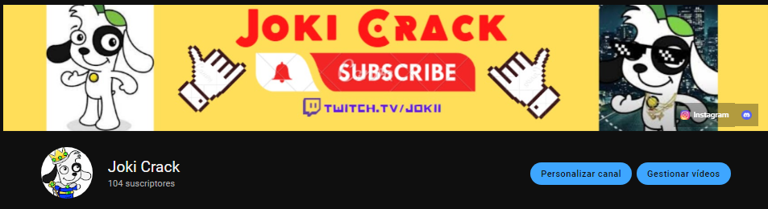

La llegada a los 100 Suscriptores
Joki Consigue logro de 100 Subs en Youtube
Luego de tanto esfuerzo y dedicacion, JokiCrack consigue llegar a la suma de 100 Suscriptores en su Canal de Youtube, y por fin desbloquear nuevas funciones en su canal que antes no tenia

Joki Abandona su Canal?
Se confirma que Joki ha djado youtube por un tiempo
Durante las ultima semanas JokiCrack ha tenido un poco abandonado su Canal de Youtube y lo que ha informado es que tiene varos inconvenientes on subir videos debido a sus estudios y el poco tiempo para usar la computadora por lo que decide optar dejar youtube por un tiempo no mas de 2 mese asegura en su pestaña de comunidad en youtube, hasa ahora no se tiene idea de que sucedio pero es lo unico que sabemos hasta el momento.

Nueva Imagen
Nuevo Diseño en el canal
Joki ha decidido renovar tanto fondo de twitch como banner de youtube incluyendo imagen de perfil de no solo twitch y youtube sino que tambien de sus diferentes redes sociales, decidio tomar un nuevo modelo nitido y de colores vivos, simple pero con todo lo necesario para exprezarce correctamente.
